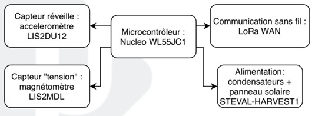
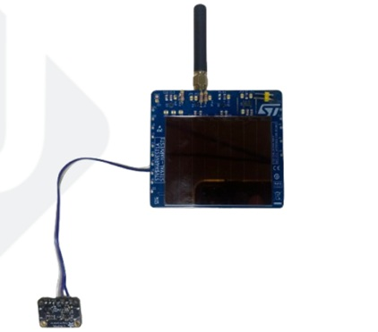
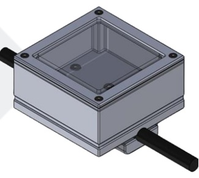
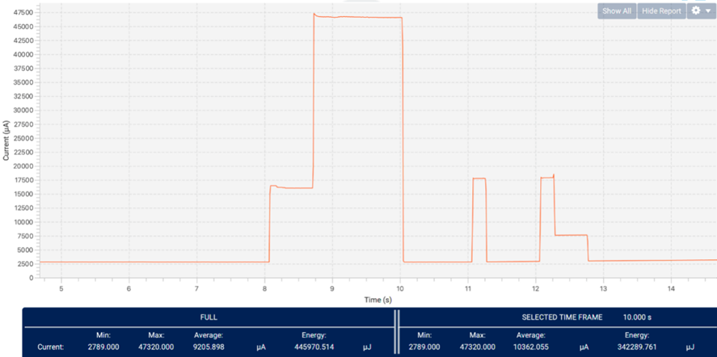
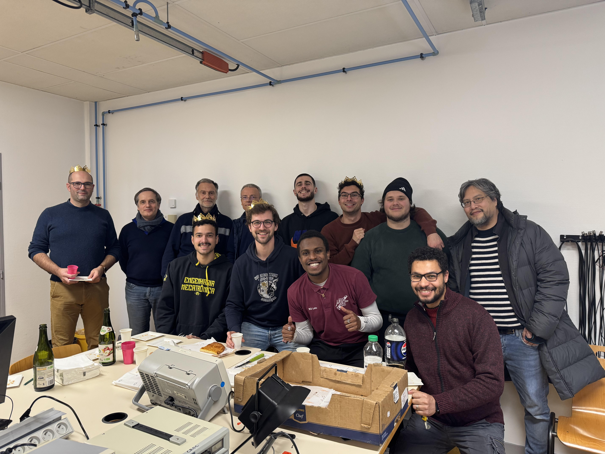

Dispositif Autonome Anti-Vol de Câbles

1. Le Challenge : Sécuriser les réseaux électriques
Le vol de câbles électriques, notamment en cuivre, représente un problème opérationnel et financier majeur pour des entreprises d'infrastructures comme la SNCF ou Enedis.
Dans le cadre de l'option CROC, en partenariat avec STMicroelectronics, l'objectif était de concevoir un dispositif de surveillance capable de répondre à des contraintes extrêmes : il devait être totalement autonome en énergie, capable de détecter la coupure ou la chute d'un câble de manière fiable, et transmettre une alerte sans fil à un récepteur distant, le tout en résistant aux intempéries.

2. Architecture Électronique & Détection

Le cœur du système repose sur un microcontrôleur STM32 Nucleo WL55JC1, intégrant nativement la communication longue portée LoRaWAN. L'intelligence du boîtier repose sur une machine à états finis couplée à deux capteurs clés :
- Le réveil (Accéléromètre LIS2DU12) : Ce capteur ultra-basse consommation détecte les chocs ou la chute du câble. Il génère une interruption matérielle (sur la broche EXTI6) qui sort le microcontrôleur de son sommeil profond.
- L'évaluation (Magnétomètre LIS2MDL) : Une fois réveillé, le système mesure le champ magnétique sur 3 axes (10 mesures sur 100ms) pour vérifier si le courant circule toujours dans le câble (mesure indirecte).
Si la variation du champ magnétique confirme la coupure, un message LoRa encodant la cause de l'alarme et l'état de la batterie est transmis.
3. Conception Mécanique & Étanchéité
Concevoir un boîtier pour l'IoT extérieur impose des défis contradictoires : il doit être robuste, mais laisser passer les ondes et la lumière.
- La cage de Faraday : Un boîtier 100% métallique protégerait l'électronique mais bloquerait la transmission LoRaWAN. Nous avons opté pour un corps usiné en métal couplé à une plaque supérieure en plexiglas.
- Énergie solaire : Cette plaque transparente permet d'alimenter le panneau solaire interne tout en protégeant les composants des rayons UV destructeurs.
- Fixation & Étanchéité : L'interface avec le câble est assurée par des mâchoires imprimées en 3D en ASA (un polymère résistant aux UV et aux intempéries). L'étanchéité globale est garantie par des joints toriques, et du gel de silice est intégré pour gérer la condensation interne.

4. Gestion de l'Énergie (Energy Harvesting)

L'autonomie totale était la contrainte principale. Nous avons utilisé la carte de récupération d'énergie STEVAL-HARVEST1 (panneau solaire couplé à des supercondensateurs).
Le logiciel embarqué (basé sur le package LoRaWAN END NODE de ST) gère l'énergie de manière automatique en endormant les composants non critiques. J'ai utilisé l'outil STLink-V3PWR pour profiler précisément la consommation du microcontrôleur lors des phases de sommeil, de mesure et de transmission radio, afin d'optimiser le code et garantir la pérennité du dispositif sur le terrain.
5. Résultats & Perspectives
Le prototype final a passé avec succès les tests de validation : le boîtier est étanche, résiste aux chocs, détecte la chute du câble et la coupure de courant par magnétométrie de manière indirecte, et transmet l'alerte via le réseau LoRaWAN de manière autonome.
Perspectives industrielles : Bien que fonctionnel, l'optimisation de la consommation en veille (actuellement à 2,8 mA) reste un axe d'amélioration, avec pour objectif d'atteindre quelques centaines de microampères. Le passage d'une carte d'évaluation (Nucleo) à un PCB de production sur-mesure permettra de réduire drastiquement l'encombrement final.
